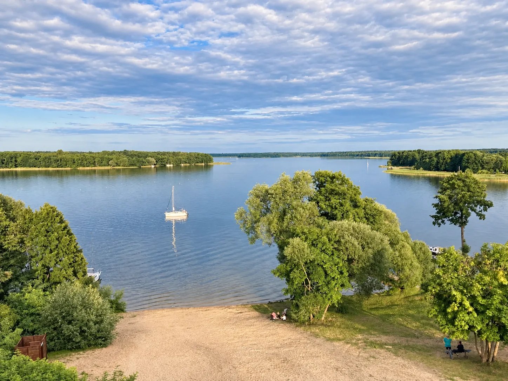

Wieś między wodą a lasem
Siemiany są niewielkie, ale mają wyjątkowo gęstą historię. Jeziorak, las i praca ludzi przez stulecia układały się tu w jedną opowieść - od leśnej strażnicy i wypalania węgla drzewnego po rybacką wieś, turystykę i literackie legendy.

Dziś najłatwiej zauważyć plażę, wieżę widokową, przystanie i letni ruch. Wystarczy jednak odejść kilkaset metrów od jeziora, żeby wejść w Lasy Iławskie i zobaczyć drugą stronę miejscowości.
Historia ma tu własną opowieść
Siemiany zaczynały jako osada związana z lasem, smolarstwem i rybołówstwem. Później przyszły żegluga, letnicy, kultura i miejsca, które do dziś wracają we wspomnieniach - Cyraneczka, dawne bary, Biały Chłop i spotkanie Edwarda Stachury ze Zbigniewem Nienackim.
Żeby przewodnik po współczesnych Siemianach pozostał praktyczny, pełne kalendarium, dawne knajpy, legendy i literackie historie zebraliśmy na osobnej stronie.
Historia Siemian - od 1576 r. do dziś →Początki wsi, las i ryby, Adolf Tetzlaff, Biały Chłop, Cyraneczka, Stachura i rozwój turystyki.Siemiany na jednej mapie
Zebraliśmy w jednym miejscu punkty, które naprawdę przydają się podczas pobytu: nasz domek, plaże, wieżę widokową, Ekomarinę, restauracje, miejsca nad wodą i początki tras w las.
Mapa jest nasza i będzie rozwijana razem z przewodnikiem. Lokalne nazwy plaż oraz dostęp do części miejsc mogą zmieniać się sezonowo. Otwórz mapę na pełnym ekranie ↗
Kilka plaż, kilka różnych sposobów na Jeziorak
W Siemianach nie ma jednej plaży, do której wszyscy muszą iść. W zależności od nastroju można wybrać bardziej centralne kąpielisko albo mniejszy, spokojniejszy fragment brzegu.
Plaża miejska
Najbardziej oczywiste miejsce na szybkie zejście nad wodę. Dobra, gdy chcesz być blisko centrum miejscowości i letniego życia.
U Hermana
Mała, lokalna plaża o zupełnie innym charakterze niż większe kąpieliska. Dobre miejsce na krótszy pobyt nad wodą.
Na Rożku
Znane miejsce nad wodą, ale obecnie zmienia się właściciel. Dostęp i zasady mogą się zmienić, dlatego przed wyjściem warto sprawdzić aktualną sytuację.
Za amfiteatrem
Plaża z zapleczem gastronomicznym, dużym placem zabaw i pomostem przy polu namiotowym. Dobra opcja szczególnie dla rodzin z dziećmi.
Warunki nad wodą i dostęp do poszczególnych miejsc mogą zmieniać się sezonowo. Na stronie opisujemy lokalne nazwy i miejsca tak, jak funkcjonują wśród mieszkańców i gości.
Od kajaka po skuter
W sezonie w Siemianach działają wypożyczalnie sprzętu wodnego. Można znaleźć rowery wodne, kajaki i łodzie, a także skutery wodne. Oferta zależy od sezonu i konkretnego punktu, więc przed przyjazdem warto sprawdzić aktualną dostępność.
Jeśli chcesz spróbować żeglarstwa, większy wybór czarterów jest w Iławie. Jeziorak daje bardzo różne możliwości - od spokojnego godzinnego pływania przy Siemianach po całodniowe wyprawy między wyspami.
Na całym Jeziorze Płaskim obowiązuje zakaz używania napędu mechanicznego - także dla jednostek wpływających od strony Jezioraka. Zobacz aktualną zasadę i źródło →
Nowy punkt dla rowerzystów
Od 2026 r. w Siemianach działa zmodernizowane miejsce postoju rowerzystów. Są tam zadaszona wiata, stoły i ławki, stojaki, stacja napraw oraz ładowania rowerów elektrycznych, oświetlenie i tablica informacyjna z kodem QR.
To drobiazg, ale bardzo praktyczny, jeśli Siemiany są przystankiem na większej pętli wokół Jezioraka albo bazą do krótszych wyjazdów po Lasach Iławskich.
Gdzie zjeść w Siemianach
Latem działa w Siemianach kilka miejsc, ale wybór gastronomii nie jest duży - można zjeść smażoną rybę, domowy obiad i skorzystać z kilku sezonowych propozycji. Godziny otwarcia zmieniają się sezonowo, dlatego przed wyjściem warto zajrzeć na stronę lub profil lokalu.
Szopa
Jeśli ktoś pyta nas, gdzie pójść na dobrą smażoną rybę albo zwyczajny, solidny obiad, najczęściej kierujemy go właśnie tutaj. Lubimy Szopę za ryby, dania obiadowe i bezpretensjonalny charakter.
Bar na Skarpie
Kuchnia polsko-gruzińska i jeden z najbardziej charakterystycznych punktów Siemian. W sezonie odbywają się tu także potańcówki i wieczory z muzyką. Z tarasu rozciąga się szeroki widok na Jeziorak.
tel. 89 640 44 81
Facebook Baru na Skarpie ↗Restauracja Szyszka
Restauracja przy ośrodku wypoczynkowym. Kolejna opcja na obiad lub kolację w samej miejscowości.
tel. 661 585 336
Szyszka na Facebooku ↗Lokale w Siemianach działają mocno sezonowo - przed przyjazdem warto sprawdzić bieżące godziny.
Przez większość roku cisza. Latem - scena nad jeziorem.
Siemiany potrafią być bardzo spokojne, ale w sezonie mają też drugie oblicze. Festiwal Nad Jeziorakiem od dwóch dekad ściąga do niewielkiej wsi artystów znanych z największych polskich scen, a Stachuriada przypomina o literackiej historii miejscowości.
Jubileuszowy Festiwal Nad Jeziorakiem
W 2026 r. na siemiańskiej scenie wystąpili m.in. Natalia Kukulska, Małgorzata Ostrowska, Czerwony Tulipan oraz Waldemar Malicki z Małgorzatą Krzyżanowicz. To dobra miara skali imprezy: przez dwa dni mała wieś staje się muzycznym centrum okolicy.
XX Festiwal - Gmina Iława ↗Stachuriada
Wydarzenie poświęcone Edwardowi Stachurze nadal odbywa się w Siemianach. Edycja 2025 połączyła opowieść o poecie, interpretacje jego tekstów i koncerty w siemiańskim amfiteatrze.
Stachuriada 2025 - relacja ↗Archiwum kilku poprzednich edycji
 2023IRA, Anna Wyszkoni, Czerwony TulipanOtwórz materiały z edycji 2023 ↗
2023IRA, Anna Wyszkoni, Czerwony TulipanOtwórz materiały z edycji 2023 ↗
 2024Michał Szpak, Happysad, Łobaszewska-NowakOtwórz materiały z edycji 2024 ↗
2024Michał Szpak, Happysad, Łobaszewska-NowakOtwórz materiały z edycji 2024 ↗
 2025Piotr Cugowski i kolejna letnia edycjaOtwórz materiały z edycji 2025 ↗
2025Piotr Cugowski i kolejna letnia edycjaOtwórz materiały z edycji 2025 ↗
Archiwum pokazujemy jako zapis poprzednich sezonów - nie jako bieżący kalendarz. W sezonie warto sprawdzać aktualne wydarzenia w Siemianach i Ekomarinie bezpośrednio przed przyjazdem.
A kilka kilometrów dalej - fortepian na łące w Jerzwałdzie →Leszek Możdżer, Adam Makowicz, Janusz Olejniczak, Józef Skrzek i inni muzycy w zupełnie niekoncertowej scenerii.Siemiany z powietrza
Z góry najlepiej widać, jak niewiele przestrzeni dzieli wieś od Jezioraka i rozległych lasów.